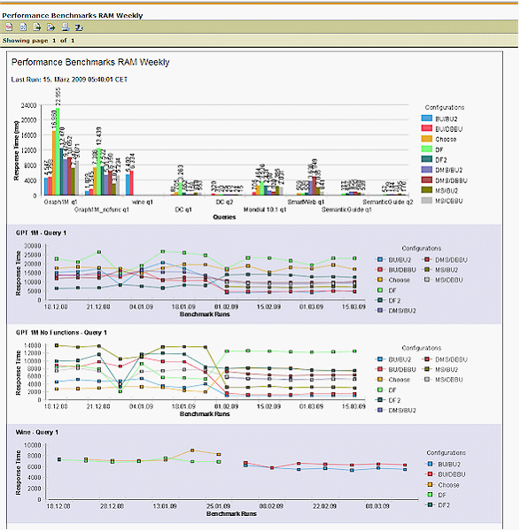

|

|
|
OntoBroker Tools |
|
|
|
|
OntoBroker Tools |
You can find all of the tool scripts in the "tools" subdirectory of your OntoBroker installation.
Tool for Performance Benchmarks: (benchmark cmd / sh)
OntoBroker has a built-in tool for measuring query times, which is an important task when designing or optimizing an application. A typical use-case is to find the best configuration for your application by comparing different query evaluation methods. Or you might want to discover regression problems in your application. In this case you can execute the benchmarks regularly and compare them with each other. The results of a benchmark run can be viewed in a graphical report or in a textual output file. Below there is an example of a graphical report with some suites in different configurations.

Benchmark reports are created in sub directories of benchmark.xml
1. Configure your benchmarks
Create a benchmark configuration file with the XML structure shown below. You might reuse the provided example file benchmark/benchmark.xml.
If using relative paths, these paths must be in relation to the startup directory from where the benchmark is run.
Example:
<ontobrokerBenchmark>
<property name="benchmarksuite.config.dir" value="resources/testfiles/performancetest/testsuites/benchmarksuite/configurations" />
<property name="benchmark_files.dir" value="resources/testfiles/performancetest/testsuites/benchmarksuite/benchmarks/benchmark_files" />
<!-- ====================================================
Format since OntoBroker 6.1
==================================================== -->
<suite name="Graph1M">
<arguments>-obl ${bigfiles.base.dir}/gptInterfaceTest/graph1000000.obl</arguments>
<!-- New: Inline query file! -->
<queryfile>@{options[skipSendingAnswers]} ?- closure(?X,?Y,?Z).</queryfile>
<configurations>
<!-- New: Use attribute "name" and "file" instead of xml element "configName" and "configFile" -->
<configuration name="BU/BU2" file="${benchmarksuite.config.dir}/BU_BU2.prp" />
<configuration name="BU/DBBU" file="${benchmarksuite.config.dir}/BU_DBBU.prp" />
<configuration name="BU/BU3" file="${benchmarksuite.config.dir}/BU_BU3.prp" />
<!-- New: Inline config file! -->
<configuration name="DF2">
OntologyLanguage = ObjectLogic
Storage=RAM.AVL.Packed
EvaluationMethod=DynamicFiltering2</configuration>
</configurations>
</suite>
<!-- ====================================================
Format before OntoBroker 6.1 - still valid!
==================================================== -->
<suite>
<name>Graph1M_nofunc</name>
<arguments>-obl ${bigfiles.base.dir}/gptInterfaceTest/graph1000000nofunctions.obl</arguments>
<queryfile>${benchmark_files.dir}/GPT.queries.obl</queryfile>
<configurations>
<configuration>
<configName>BU/BU2</configName>
<configFile>${benchmarksuite.config.dir}/BU_BU2.prp</configFile>
</configuration>
<configuration>
<configName>BU/DBBU</configName>
<configFile>${benchmarksuite.config.dir}/BU_DBBU.prp</configFile>
</configuration>
<configuration>
<configName>BU/BU3</configName>
<configFile>${benchmarksuite.config.dir}/BU_BU3.prp</configFile>
</configuration>
<configuration>
<configName>DF2</configName>
<configFile>${benchmarksuite.config.dir}/DF2.prp</configFile>
</configuration>
</configurations>
</suite>
</ontobrokerBenchmark>
| • | The suite's name tag must be unique for the benchmark configuration |
| • | The arguments tag must contain the loaded ontologies (e.g. -flo ...), other startup parameters are allowed |
| • | The queryfile tag must contain the path to a text file which contains the queries; within this query file the queries must be written one per line |
| • | The configName tag must be unique within the <suite> part but can be reused in different suites |
| • | The configFile tag must contain the path to a OntoBroker configuration file |
2. Execute your benchmarks
The startup script "benchmark.cmd" (resp. "benchmark.sh" for Linux/Unix) - located at [Ontobroker_HOME\tools] - executes the benchmarks and stores the results in a given output directory. The following arguments are allowed:
benchmark.cmd <benchmarksuiteFileName> : stores the results at default output directory <benchmarksuiteFileName>_output\
benchmark.cmd <benchmarksuiteFileName> <benchmarksuiteOutputDir> : stores the results at the given output directory
benchmark.cmd <benchmarksuiteFileName> -clean : deletes the default output directory (<benchmarksuiteFileName>_output\)
benchmark.cmd <benchmarksuiteFileName> -clean <benchmarksuiteOutputDir> : deletes the given output directory
The provided example benchmark can be run via this command:
tools/benchmark.cmd benchmark/benchmark.xml
3. Look at the benchmark results
The benchmark results can be found in the given output directory: As a simple text file results.txt or as a graphical report benchmark_report.rptdesign (in conjunction with a results database that contains the results of all benchmark runs for historical comparisons.)
To view the graphical report you may use the eclipse IDE with BIRT (http://www.eclipse.org/birt/) extension or install a BIRT Report Viewer. Note that a JDBC driver for H2 databases is also required.
Script location:
Windows: tools\benchmark.cmd
Linux: tools/benchmark.sh
Tool to convert files
This commandline tool allows files to be converted from one ontology format to another. Conversions from and to ObjectLogic, OWL and RDF(S) are supported. The options are:
convert [-fenc <ENCODING>] [-all] <inputFile> <outputFile>
Converting a file from ObjectLogic to OWL can be done via
tools\convert.cmd -fenc UTF-8 examples/objectlogic/travel.obl travel.owl
or
convert.cmd -fenc UTF-8 ../examples/objectlogic/travel.obl travel.owl
NOTE: The output format is given by the target filename.
Script location:
Windows: tools\convert.cmd
Linux: tools/convert.sh
Tool for checking NamesGround compliance
This tool loads an ontology and checks various properties of the rules (if all rules are bottomup evaluable, the number of rules, and so on). It also checks if you can safely use the configuration options "ConceptNamesGround", "AttributeNamesGround", or "ModuleNamesGround". Usage:
checkontology <file>
You should always execute this tool after you have changed the rules. This helps to detect possible problems as early as possible.
Script location:
Windows: tools\checkfornamesgroundsafety.cmd
Linux: tools/checkfornamesgroundsafety.sh
Tool to dump list with built-ins
This tool dumps all built-ins available in OntoBroker for the current configuration.
Script location:
Windows: tools\logbuiltins.cmd
Linux: tools/logbuiltins.sh
Tool to compact H term store
If you use H2 as storage, you can use this tool to remove unused, i.e. no longer used terms from the datamodel.
NOTE: This will not result in a smaller database file. To shrink the H2 database file, an explicit database compaction has to be performed. See H2 database website for details.
Tool to execute commands
Use this script to execute commands directly from the command line.
Windows:
command.cmd [-h <host>] [-p <port>] <command>
Linux:
./command.sh [-h <host>] [-p <port>] <command>
Example:
command.cmd "commands"
Tool to execute queries
Use this script to execute queries directly from the command line.
Windows:
query.cmd [-p <port>] <querytext>
Linux:
./query.sh [-p <port>] <querytext>
Example:
query.cmd "?- $module(?M)."